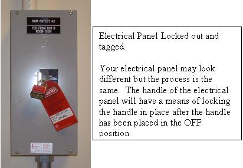

GEMS Proprietary Class: A
Direction 5117807-800, Rev# A
GEMS Proprietary Class: A |
| POSSIBLE ELECTRIC SHOCK | |
| SERVICING HARDWARE WITH POWER ON. | |
| Equipment service can only be performed SAFELY with the main Power "Disconnect" tagged and locked out. |
Follow these general rules:
Only qualified service personnel trained in the service and operation of this scanner should perform any service on this equipment.
Equipment fuses, switches and circuit breakers are for fire and equipment protection only. Do not rely on them to protect you against electrical shock or un-commanded equipment motion.
Personal Protection Equipment (PPE) is required and must be worn.
The service switches and circuit breakers described hereafter are not to be relied on as personal protection devices. They do not replace tag and lockout of main power to ensure personal safety. Switches and breakers are intended to only inhibit particular system functions and equipment operation. They do not eliminate or remove the electrical or mechanical hazards that exist. Because hardware can fail and defeat the functionality of these devices, only Lockout/Tagout ensures protection from unattended gantry rotation and electrocution.
Personal protection equipment must always be used when performing service on this equipment. Always use PPE when working with hazardous chemicals or materials.
Following are the Lock Out Tag Out/Safety procedures relating to Thermal, Electrical, Mechanical and Hydraulic energy in the CT LightSpeed system. Be familiar with these procedures as they are referenced in the service procedures when appropriate.
When working on the CT LightSpeed gantry after the system has been scanning, you may have to wait for up to 60 minutes for the tube and heat exchanger to cool down if you will be touching the tube. A more specific cooling period for performing service on the tube will be found in the X-ray tube service procedures.
Prepare for shutdown of equipment. Notify affected personnel working in the area that LOTO is being performed.
Bring the system software down at the operator console.
Wait for the system to indicate on the monitor that it is safe to power off the computer before proceeding. This usually takes about 90 seconds before this message is seen.
Turn off power at the system Main Disconnect Panel and apply personal lock and tag. See Illustration 1 for example.
Verify that all energy has been dissipated as follows. Take the top and front cover off the PDU. Measure incoming system power at TS1 (for NGPDU) or Input Power Panel (for Compact PDU). Measure each phase to ground and verify zero potential.
Wait 5 minutes for any stored energy in capacitors to dissipate.
Service/repair the CT system per service instructions.
Notify affected personnel that equipment will be re-energized and LOTO devices are being removed.
Remove Lock-Out Tag-Out equipment from Main Disconnect and re-apply power to the PDU Cabinet.
Reset the Gantry drives by pushing the reset button on any of the control panels.
Bring the system software back up.
Illustration 1: Electrical Panel Example

| NOTE: | This procedure is to lock the gantry from tilting. This is not for use when replacing the tilt hydraulic cylinders. The appropriate method is documented in that replacement procedure. |
Position gantry at zero degrees tilt.
Take shipping brackets from storage compartment in top of the PDU (if compact PDU) or Gantry base (NGPDU).
Bolt them in place on both sides of the gantry using 3 bolts with each bracket. See Illustration 2.
Service the gantry per service procedures.
Notify affected personnel that gantry locking devices are being removed.
Loosen the bolts of the gantry tilt shipping brackets 1-2 turns and make sure the shipping bracket feels loose. If it is not loose, there may be a problem.
CAUTION: If tilt bracket is not loose, stop and put the bolts back in and tighten tilt bracket back in place. If there is a load on the tilt bracket, removal may cause the gantry to suddenly tilt all the way back due to a possible lack of hydraulic pressure.
Check the hydraulic connections for leaks or lack of fluid. Use the tilt controls to relieve the load on the tilt bracket prior to removal. Do not use force to remove the bracket.
Remove the gantry tilt shipping brackets and place them back in their storage location.
Illustration 2: Gantry Tilt Locking Method